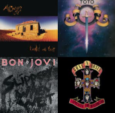

Nuestras Playlists de Rock
Hacé clic en cada botón para ver más detalles:
1. Playlist de Classic Rock
Grandes solos de guitarra eléctrica, órganos Hammond, baterías legendarias y voces inolvidables del Rock Clásico.

Hacé clic en cada botón para ver más detalles:
Grandes solos de guitarra eléctrica, órganos Hammond, baterías legendarias y voces inolvidables del Rock Clásico.
